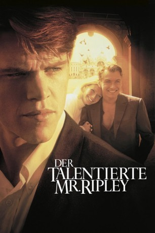

#2330 Der Talentierte Mr. Ripley
Alternativ: The Talented Mr. Ripley
Auszeichnungen: für 5 Oscars nominiert 1 BAFTA-Awards gewonnen
 
 IMDB-Wertung: 7.4 / 10
IMDB-Wertung: 7.4 / 10  Metascore: 76
Metascore: 76 
Der mittellose Tom Ripley erhält den Auftrag, nach Italien zu reisen, um seinen Altersgenossen, den jungen amerikanischen Playboy Dickie Greenleaf zu überreden, in die USA zurückzukehren. Dickie aber bleibt hartnäckig und zieht es vor, weiterhin das Dolce Vita mit seiner reizenden Verlobten Marge zu genießen. Tom beneidet Dickie um das Leben, das er führt. Eines Tages, während einer gemeinsamen Reise zum Jazzfestival von San Remo, kommt es zu einer Rauferei, die fast aus Versehen beginnt, sich aber zum todernsten Kampf ausweitet. Mit viel Talent schlüpft Tom Ripley von nun an in die Haut des getöteten Dickie Greenleaf, eignet sich seinen Lebensstil an und will alles hinter sich lassen. Er genießt sein Leben am Abgrund, denn einige Menschen, die Dickie Greenleaf nahe standen, stellen sich natürlich Fragen: Ist es möglich, dass jemand, selbst wenn er so extrem launisch ist wie Dickie, einfach verschwindet?
Jahr: 1999
Dauer: 139 Minuten
FSK: 12
Land: USA Studio: MiramaxTonspuren: DTS - ,
Untertitel: Deutsch,
Auflösung: 1080p (1920x1032) Größe: 12288 MB
Genre: Thriller, Drama, Krimi
Regisseur:  Anthony Minghella
Anthony Minghella
Drehbuch: Patricia Highsmith, Anthony Minghella
Soundtrack: Gabriel Yared
Darsteller:
 Matt Damon als Tom Ripley
Matt Damon als Tom Ripley Gwyneth Paltrow als Marge Sherwood
Gwyneth Paltrow als Marge Sherwood Jude Law als Dickie Greenleaf
Jude Law als Dickie Greenleaf Cate Blanchett als Meredith Logue
Cate Blanchett als Meredith Logue Philip Seymour Hoffman als Freddie Miles
Philip Seymour Hoffman als Freddie Miles Jack Davenport als Peter Smith-Kingsley
Jack Davenport als Peter Smith-Kingsley James Rebhorn als Herbert Greenleaf
James Rebhorn als Herbert Greenleaf Philip Baker Hall als Alvin MacCarron
Philip Baker Hall als Alvin MacCarron Celia Weston als Aunt Joan
Celia Weston als Aunt Joan- Stefania Rocca als Silvana
- Alessandro Fabrizi als Sergeant Baggio
- Lisa Eichhorn als Emily Greenleaf
- Gretchen Egolf als Fran
 Deirdre Lovejoy als Fighting Neighbor
Deirdre Lovejoy als Fighting Neighbor Brian Tarantina als Fighting Neighbor
Brian Tarantina als Fighting Neighbor- Fabrizia Dal Farra als Italian Girl , uncredited
 Dominic Fumusa als Italian Boy at Rome , uncredited
Dominic Fumusa als Italian Boy at Rome , uncredited- Sergio Rubini als Inspector Roverini
- Fiorello als Fausto
- Ivano Marescotti als Colonnello Verrecchia
- Anna Longhi als Signora Buffi
- Jack Willis als Greenleaf Chaffeur
- Frederick Alexander Bosche als Fran's Boyfriend
- Dario Bergesio als Police Officer
- Larry Kaplan als Uncle Ted
- Claire Hardwick als Gucci Assistant
- Antonio Prester als American Express Clerk
- Lorenzo Mancuso als Bus Driver
- Onofrio Mancuso als Priest
- Massimo Reale als Immigration Officer
- Emanuele Carucci Viterbi als American Express Clerk
- Caterina Deregibus als Dahlia
- Silvana Bosi als Ermelinda
- Gianfranco Barra als Desk Manager Aldo
 Renato Scarpa als Tailor
Renato Scarpa als Tailor- Guy Barker als Trumpet, Napoli Jazz Septet
- Bernardo Sassetti als Piano, Napoli Jazz Septet
- Perico Sambeat als Alto Sax, Napoli Jazz Septet
- Gene Calderazzo als Drums, Napoli Jazz Septet mer
- Joseph Lepore als Double Bass, Napoli Jazz Septet
- Rosario Giuliuni als Tenor Sax, Napoli Jazz Septet
- Eddy Palerno als Electric Guitar, Napoli Jazz Septet
- Byron Wallen als Cornet, San Remo Jazz Sextet
- Pete King als Alto Sax, San Remo Jazz Sextet
- Clark Tracey als Drums, San Remo Jazz Sextet
- Jean Toussaint als Tenor Sax, San Remo Jazz Sextet
- Geoff Gascoyne als Bass, San Remo Jazz Sextet
- Carlo Negroni als Piano, San Remo Jazz Sextet
- Beppe Fiorello als Silvana's Fiancé
- Marco Quaglia als Silvana's Brother
Datei: X:\1999\Talentierte Mr. Ripley, Der (1999, FSK12, 1920x1032).mkv seit 30.10.2015
Festplatte: HD 1996-2002
 Es gibt insgesamt 81 Filme in der Gruppe '1999'
Es gibt insgesamt 81 Filme in der Gruppe '1999'